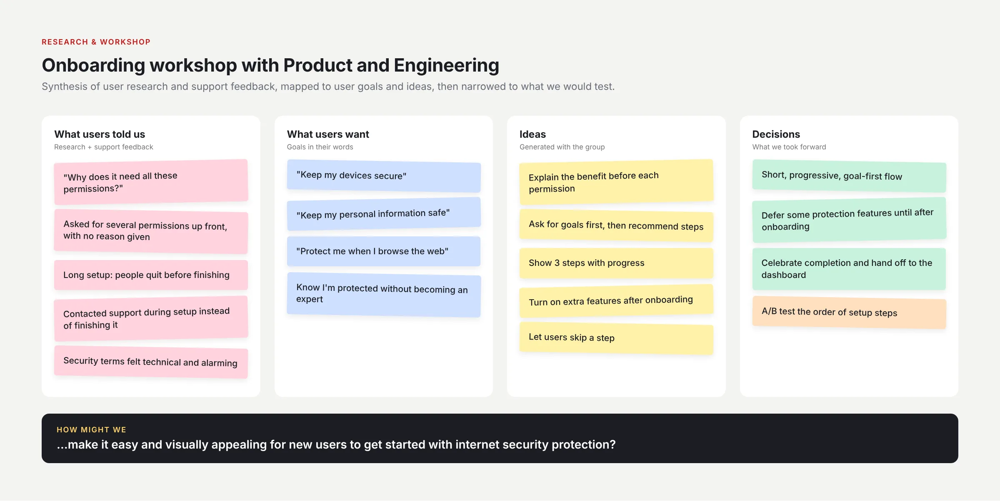
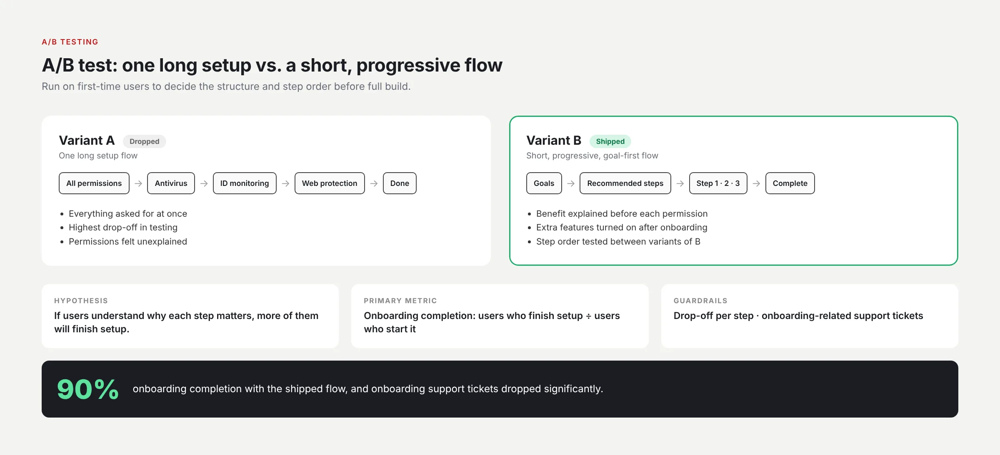
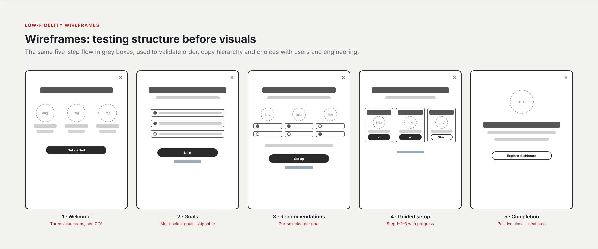
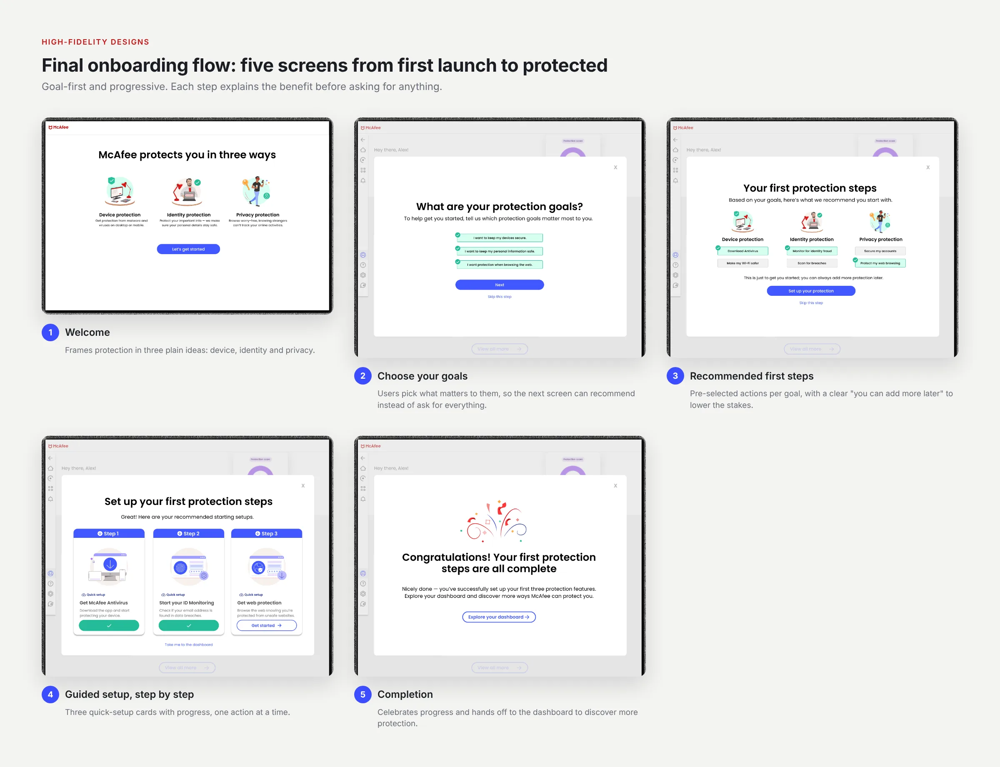
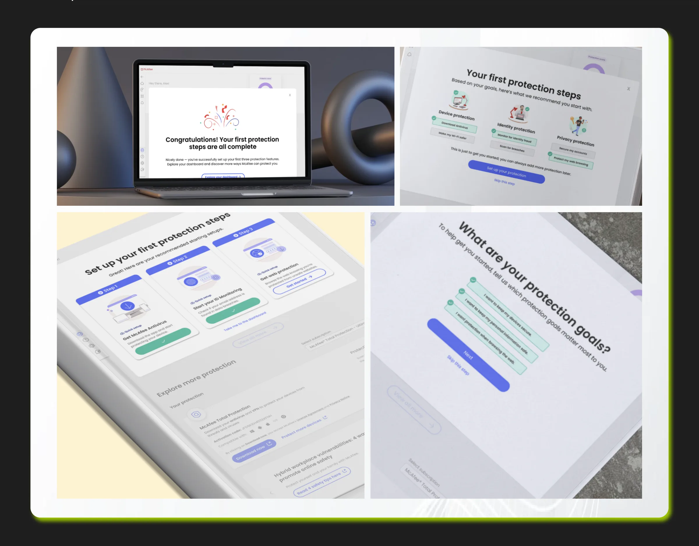
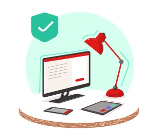
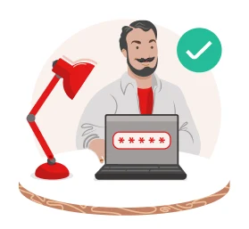
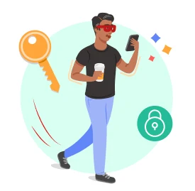
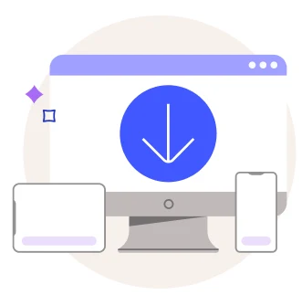

Problem Statement
How could we make an easy and visually appealing journey for the user to get started with internet security protection?
Role & Responsibilities
As the Product Design Consultant, I directed user experience and visual design across the full product lifecycle — from research and ideation to production. I conducted competitor analysis, led A/B testing, and created prototypes and design documentation.
I partnered closely with product managers and engineering leads to translate business requirements into high-quality, security-focused user experiences.
Research & Workshop
What research revealed
New users dropped off when asked to grant several permissions up front without understanding why. Many contacted support during setup instead of finishing it.
I ran a workshop with Product and Engineering to map what users told us against the goals they described in their own words: keep my devices secure, keep my personal information safe, and protect me when I browse the web. We turned those into ideas, then narrowed them to a direction we could test.

Options & Trade-offs
Directions explored
- Option A: One long setup flow. Dropped: highest drop-off in testing.
- Option B: A short, progressive flow that asks for goals first and explains the benefit before each permission. Chosen.
Trade-offs
Some protection features were turned on after onboarding rather than during it, accepting slower full protection in exchange for completion.
A/B Testing
I led an A/B test with first-time users comparing the long setup flow against the progressive, goal-first flow, then tested the order of setup steps within the winning flow. The primary metric was onboarding completion, with drop-off per step and onboarding-related support tickets as guardrails.

Wireframes
Before visual design, I worked the five-step flow out in low fidelity to agree on order, copy hierarchy and the choices on each screen with users and engineering.

High-Fidelity Designs
Once the low-fidelity concepts were validated, I moved to high-fidelity designs consistent with McAfee’s visual identity and design system. Each screen does one job: explain protection, capture goals, recommend first steps, guide setup, and celebrate completion.
Working closely with engineering, I ensured the designs were technically feasible and user-ready, using prototypes to demonstrate key interactions and guide implementation.


Try the onboarding
A working version of the first-time onboarding, rebuilt in code from the final designs. Pick your protection goals, see the steps recommended for them, set each one up and land on your dashboard.
Welcome to McAfee, Alex!
Let’s get you set up — it’ll only take a minute.
McAfee protects you in three ways

Device protectionGet protection from malware and viruses on desktop or mobile.

Identity protectionProtect your important info — we make sure your personal details stay safe.

Privacy protectionBrowse worry-free, knowing strangers can’t track your online activities.
What are your protection goals?
To help get you started, tell us which protection goals matter most to you.
Your first protection steps
Based on your goals, here’s what we recommend you start with.
This is just to get you started; you can always add more protection later.
Set up your first protection steps
Great! Here are your recommended starting setups.

Setting up your first protection…
Congratulations! Your first protection steps are all complete
Nicely done — you’ve successfully set up your first three protection features. Explore your dashboard and discover more ways McAfee can protect you.
Hey there, Alex!
Welcome to your McAfee Protection center
Let’s get you set up
Results
90% of new users who started onboarding completed it, up from about 60% with the previous flow. Onboarding-related support tickets fell by about 70% within 4 months of launch.
How we measured: onboarding funnel analytics (users who finished setup ÷ users who started it), and onboarding-tagged support tickets compared before and after launch. A/B test: about 150 users per variant over 5 weeks.